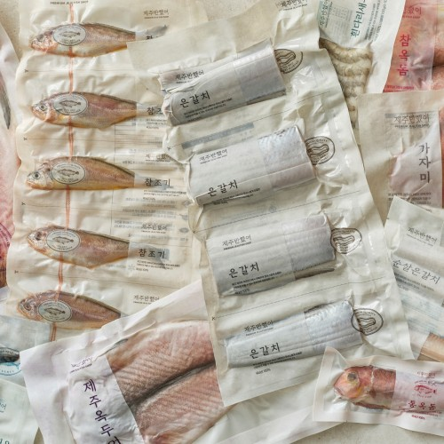
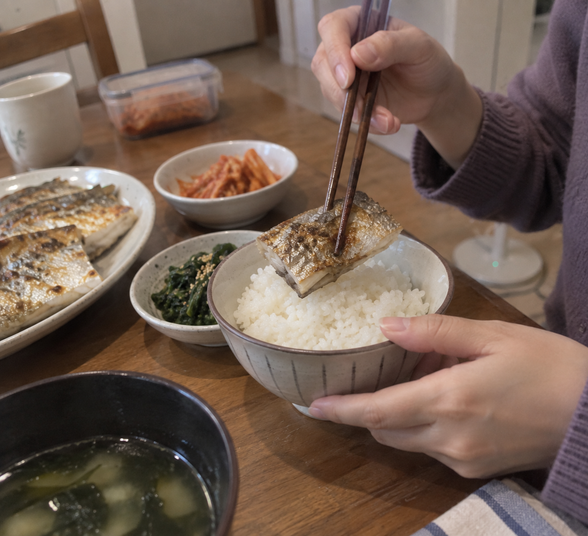
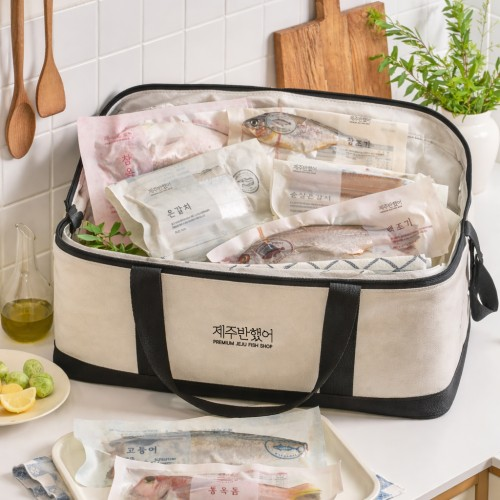

이 포스팅은 네이버 쇼핑 커넥트 활동의 일환으로, 판매 발생 시 수수료를 제공받습니다.
제주반했어 갈치 선물세트, 생선 반찬 좋아하는 부모님께
부모님께 먹거리 선물을 보내려는데 평소 고기보다 생선 반찬을 더 즐기신다면, 선물 후보도 그 취향에 맞추는 게 좋겠죠.
제주반했어 갈치 선물세트는 갈치구이나 조림을 좋아하는 분의 식탁을 떠올리며 고를 상품이에요. 이번에는 예쁜 포장만큼 실제로 드실 생선 구성에 초점을 맞춰볼게요.
1. 구이 또는 조림

노릇하게 구운 갈치를 좋아하시는지, 무를 넣은 조림을 즐기시는지부터 생각해보세요. 어떤 요리로 드실지 정하면 손질 형태와 크기를 보는 이유도 분명해져요.

판매 사진에는 갈치와 다른 생선이 함께 보이는 구성도 있어요. 사진 속 전체가 모든 옵션에 들어간다고 생각하기보다 주문할 세트의 생선 종류를 맞춰 고르면 돼요.
(좋아하시는 반찬으로 챙겨드리고 싶은 마음이에요.)
💚 갈치 단일·혼합 세트의 생선 구성 비교하기2. 세트 구성의 차이

확인해둔 표시 가격은 77,900원이에요. 그 예산에서 어떤 크기와 중량의 갈치가 들어가는지, 혼합 세트인지부터 보면 선택이 빨라요.
생선 선물은 받으신 뒤 나눠 조리할 모습까지 생각하게 되죠. 판매 사진에서 손질된 형태와 개별 포장 모습을 함께 보면 쓰임새를 판단하기 좋아요.
3. 받으실 날짜 맞추기
생신에 직접 가져갈지, 부모님 댁으로 보낼지 정하면 필요한 포장과 수령 일정이 달라져요. 보낼 날짜가 정해졌다면 해당 세트의 배송 안내에 맞춰 주문을 준비하면 돼요.
갈치를 좋아하시는 분께는 자주 차리는 식사에 이어지는 선물이 될 수 있어요. 아래에서 생선 종류와 중량, 포장을 함께 보고 받는 분에게 맞는 구성을 고르세요.
(한 끼 반찬으로 잘 드셔주시면 더 기쁘겠죠.)
생선 반찬을 즐기는 부모님께 보낼 선물이라면, 아래에서 평소 드시는 요리에 맞는 갈치 세트를 골라보세요.
💚 제주반했어 선물 포장·수령 안내 보기가격은 2026년 10월 6일 확인한 상품 표시 가격으로, 옵션·배송비·구매 시점에 따라 달라질 수 있어요.